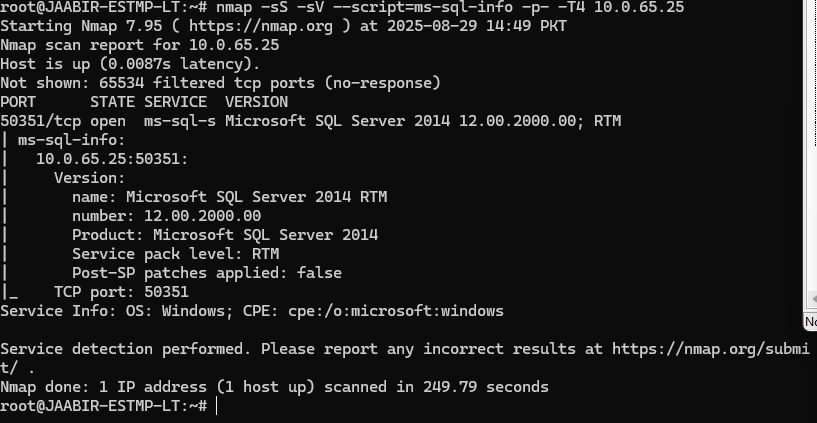

Nmap Scripting Engine NSEsd
***Main Focus is on .Net technologies and MS SQL, check below
Intro: it comes huge library of scripts under
ls -al /usr/share/nmap/scripts
they are easier to understand
need to search for http
ls -al /usr/share/nmap/scripts | grep -e "http"
category are made:
1. discovery
2. exploitation
3. brute force
4. safe
5. auth
6. broadcast
7. default --- important
each address the problems
for example
nmap -sS -sV -sC -p- -T4 <IP Address> -- -sS for port scanning
if there is a databases services discovered, e.g = mongo db
ls -al /usr/share/nmap/scripts | grep -e "mongodb"
it will list the scripts
so we need to check the scripts what categories are lying in
so nmap command will be:
nmap --script-help=<script-name>
nmap -sS -sV --script=<addthescriptname> -p- -T4 <IP Address>
in this command --script=the command
foreaxmple is that i found that "ms" comes in the scripts list so i found ms-sql-info.nse so lets use it
nmap -sS -sV --script=ms-sql-info -p- -T4 <IP Address>
it will be as follows
